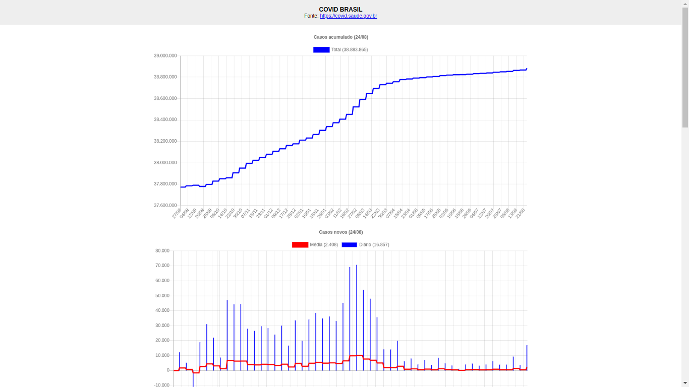
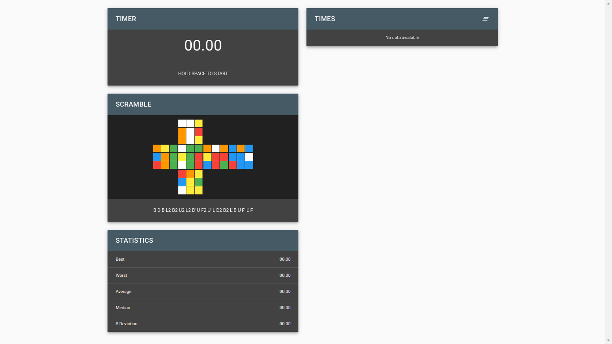
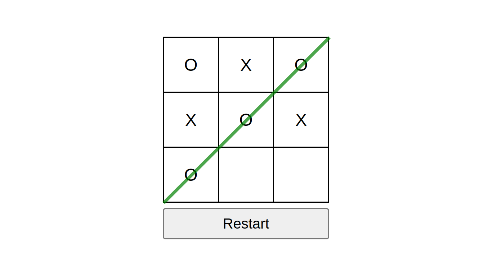
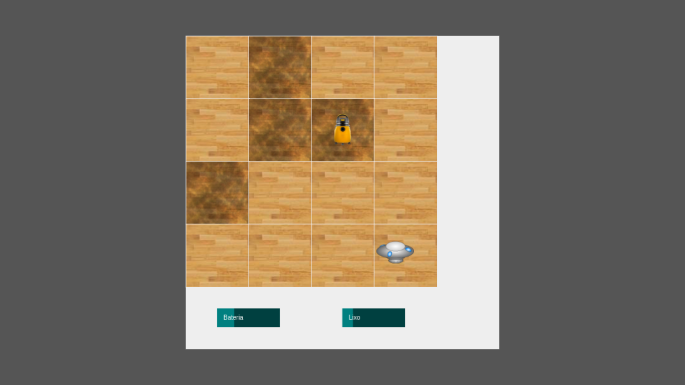

Jogo divertido, em que o jogador controla uma nave no espaço sideral e deve destruir todos os seus inimigos. A cada nível, o número de inimigos aumenta e eles ficam mais rápidos.

Gráficos Covid
Este site apresenta diversos gráficos, mostrando a evolução no número de casos e óbitos de Covid-19 durante a pandemia. Este site utiliza a API disponibilizado pelo Ministério da Saúde.

Cube Timer
Utilitário para amantes de cúbo mágigo, que permite cronometrar os tempos de solução do cubo e mostrar diversas estatísticas, para acompanhar as evoluções dos treinamentos.

Tic Tac Toe
Um simples jogo da velha, para dois jogadores no mesmo computador.

Aspirador de pó
Apenas um simulador com um agente sujador e um aspirador de pó automático, que varre todo o ambiente e coleta as sujeiras. O aspirador precisa de tempos em tempos, parar para carregar a bateria e jogar o lixo fora.